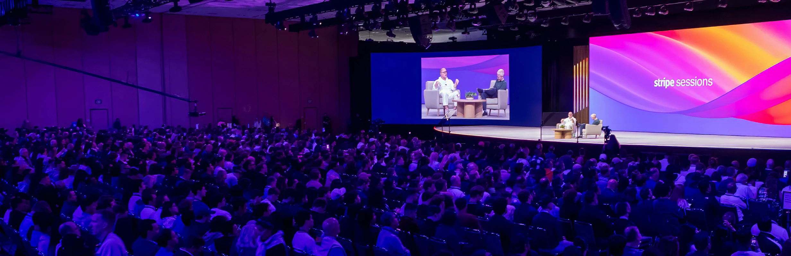

<template id="beat-4-template">
  <div data-composition-id="beat-4-trust" data-width="1920" data-height="1080" data-start="0" data-duration="3.7">

    <!-- L1: Background + ghost photo (Ken Burns) -->
    <div class="bg-layer">
      
    </div>

    <!-- L2: Hero headline -->
    <div class="headline-layer">
      <h1 class="headline">The backbone of<br/>global commerce</h1>
    </div>

    <!-- L3: Logo marquee — two rows drifting opposite directions -->
    <div class="logo-row row-top">
      
      
      
      
      
      
      
    </div>
    <div class="logo-row row-bottom">
      
      
      
      
      
      
      
    </div>

    <!-- L4: Sessions crowd photo strip -->
    <div class="sessions-strip">
      
    </div>

    <!-- L5: Gradient sweep (light leak) -->
    <div class="gradient-sweep"></div>

    <style>
      @import url('https://fonts.googleapis.com/css2?family=Inter:wght@300;400&display=block');

      [data-composition-id="beat-4-trust"] {
        width: 1920px;
        height: 1080px;
        overflow: hidden;
        position: relative;
        background: #FFFFFF;
        font-family: 'Inter', sans-serif;
      }

      /* L1: Ghost photo background */
      .bg-layer {
        position: absolute;
        top: 0;
        left: 0;
        width: 100%;
        height: 100%;
        z-index: 1;
      }
      .ghost-photo {
        width: 100%;
        height: 100%;
        object-fit: cover;
        opacity: 0.12;
      }

      /* L2: Headline */
      .headline-layer {
        position: absolute;
        top: 140px;
        left: 0;
        width: 100%;
        display: flex;
        justify-content: center;
        z-index: 5;
      }
      .headline {
        font-size: 56px;
        font-weight: 300;
        color: #000000;
        text-align: center;
        letter-spacing: -0.02em;
        line-height: 1.15;
        margin: 0;
        padding: 0;
      }

      /* L3: Logo rows */
      .logo-row {
        position: absolute;
        left: 0;
        display: flex;
        align-items: center;
        gap: 100px;
        white-space: nowrap;
        z-index: 4;
      }
      .row-top {
        top: 440px;
      }
      .row-bottom {
        top: 580px;
      }
      .logo {
        width: 180px;
        height: 60px;
        object-fit: contain;
        opacity: 0.55;
        filter: grayscale(100%);
        flex-shrink: 0;
      }

      /* L4: Sessions crowd strip */
      .sessions-strip {
        position: absolute;
        bottom: 0;
        left: 0;
        width: 100%;
        height: 140px;
        overflow: hidden;
        z-index: 3;
        mask-image: linear-gradient(to bottom, transparent 0%, rgba(0,0,0,1) 60%);
        -webkit-mask-image: linear-gradient(to bottom, transparent 0%, rgba(0,0,0,1) 60%);
      }
      .sessions-img {
        width: 100%;
        height: 100%;
        object-fit: cover;
        opacity: 0.08;
      }

      /* L5: Gradient sweep light leak */
      .gradient-sweep {
        position: absolute;
        top: 0;
        left: -60%;
        width: 60%;
        height: 100%;
        background: linear-gradient(
          90deg,
          transparent 0%,
          rgba(83, 58, 253, 0.06) 30%,
          rgba(83, 58, 253, 0.12) 50%,
          rgba(83, 58, 253, 0.06) 70%,
          transparent 100%
        );
        z-index: 6;
        pointer-events: none;
      }
    </style>

    <script src="https://cdn.jsdelivr.net/npm/gsap@3.14.2/dist/gsap.min.js"></script>
    <script>
      window.__timelines = window.__timelines || {};
      var S = '[data-composition-id="beat-4-trust"] ';
      var tl = gsap.timeline({ paused: true });

      /* ── ENTRY: fade in from blur (0→0.4s) ── */
      tl.from(S + ".bg-layer", {
        opacity: 0, filter: "blur(16px)", duration: 0.4, ease: "power2.out"
      }, 0);
      tl.from(S + ".headline-layer", {
        opacity: 0, filter: "blur(12px)", duration: 0.4, ease: "power2.out"
      }, 0);
      tl.from(S + ".sessions-strip", {
        opacity: 0, duration: 0.5, ease: "power2.out"
      }, 0.1);

      /* ── L1: Ken Burns zoom on ghost photo (full duration) ── */
      tl.fromTo(S + ".ghost-photo",
        { scale: 1 },
        { scale: 1.04, duration: 3.7, ease: "sine.inOut" },
        0
      );

      /* ── L2: Headline gentle breathe pulse ── */
      tl.fromTo(S + ".headline",
        { scale: 1, opacity: 0.9 },
        { scale: 1.015, opacity: 1, duration: 1.6, ease: "sine.inOut", yoyo: true, repeat: 1 },
        0.3
      );

      /* ── L3: Logo rows drift ── */
      tl.fromTo(S + ".row-top",
        { x: 100 },
        { x: -200, duration: 3.7, ease: "none" },
        0
      );
      tl.fromTo(S + ".row-bottom",
        { x: -200 },
        { x: 100, duration: 3.7, ease: "none" },
        0
      );

      /* ── L3: Logos staggered fade in ── */
      tl.from(S + ".logo", {
        opacity: 0, y: 12, duration: 0.35,
        stagger: { each: 0.08, ease: "power1.in" },
        ease: "power2.out"
      }, 0.2);

      /* ── L3: VO-synced logo pulses ── */
      /* "Shopify" spoken at ~0.5s */
      tl.to(S + ".logo-shopify", {
        opacity: 0.9, filter: "grayscale(30%)", duration: 0.25, ease: "power2.out"
      }, 0.5);
      tl.to(S + ".logo-shopify", {
        opacity: 0.5, filter: "grayscale(100%)", duration: 0.35, ease: "power2.in"
      }, 0.75);

      /* "Ford" spoken at ~1.2s */
      tl.to(S + ".logo-ford", {
        opacity: 0.9, filter: "grayscale(30%)", duration: 0.25, ease: "power2.out"
      }, 1.2);
      tl.to(S + ".logo-ford", {
        opacity: 0.5, filter: "grayscale(100%)", duration: 0.35, ease: "power2.in"
      }, 1.45);

      /* "OpenAI" spoken at ~1.8s */
      tl.to(S + ".logo-openai", {
        opacity: 0.9, filter: "grayscale(30%)", duration: 0.25, ease: "power2.out"
      }, 1.8);
      tl.to(S + ".logo-openai", {
        opacity: 0.5, filter: "grayscale(100%)", duration: 0.35, ease: "power2.in"
      }, 2.05);

      /* ── L4: Sessions strip subtle parallax drift ── */
      tl.fromTo(S + ".sessions-img",
        { scale: 1.05, x: -30 },
        { scale: 1.1, x: 30, duration: 3.7, ease: "sine.inOut" },
        0
      );

      /* ── L5: Gradient sweep pans across full width ── */
      tl.fromTo(S + ".gradient-sweep",
        { left: "-60%" },
        { left: "100%", duration: 3.2, ease: "power1.inOut" },
        0.2
      );

      /* ── EXIT: blur through (3.4→3.7s) ── */
      tl.to(S + ".bg-layer", {
        opacity: 0, filter: "blur(20px)", duration: 0.3, ease: "power2.in"
      }, 3.4);
      tl.to(S + ".headline-layer", {
        opacity: 0, filter: "blur(20px)", duration: 0.3, ease: "power2.in"
      }, 3.4);
      tl.to(S + ".row-top", {
        opacity: 0, filter: "blur(14px)", duration: 0.3, ease: "power2.in"
      }, 3.4);
      tl.to(S + ".row-bottom", {
        opacity: 0, filter: "blur(14px)", duration: 0.3, ease: "power2.in"
      }, 3.4);
      tl.to(S + ".sessions-strip", {
        opacity: 0, filter: "blur(10px)", duration: 0.3, ease: "power2.in"
      }, 3.4);
      tl.to(S + ".gradient-sweep", {
        opacity: 0, duration: 0.3, ease: "power2.in"
      }, 3.4);

      window.__timelines["beat-4-trust"] = tl;
    </script>
  </div>
</template>
